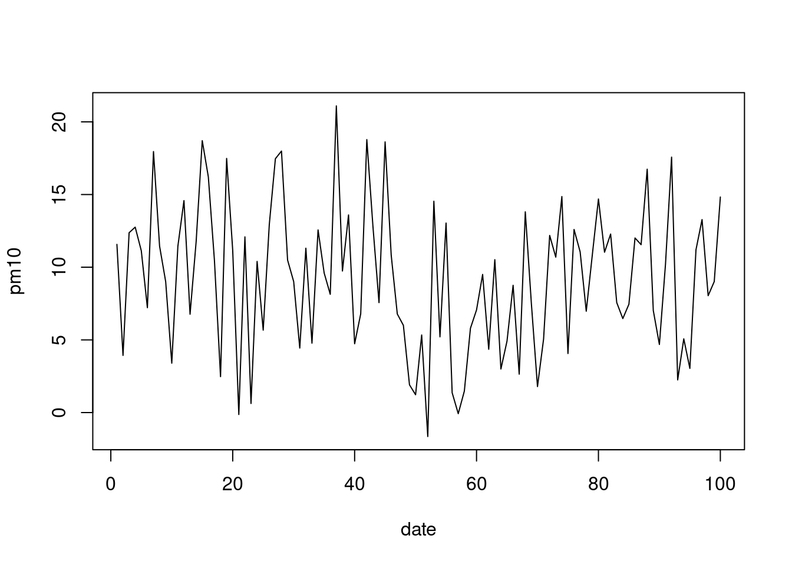
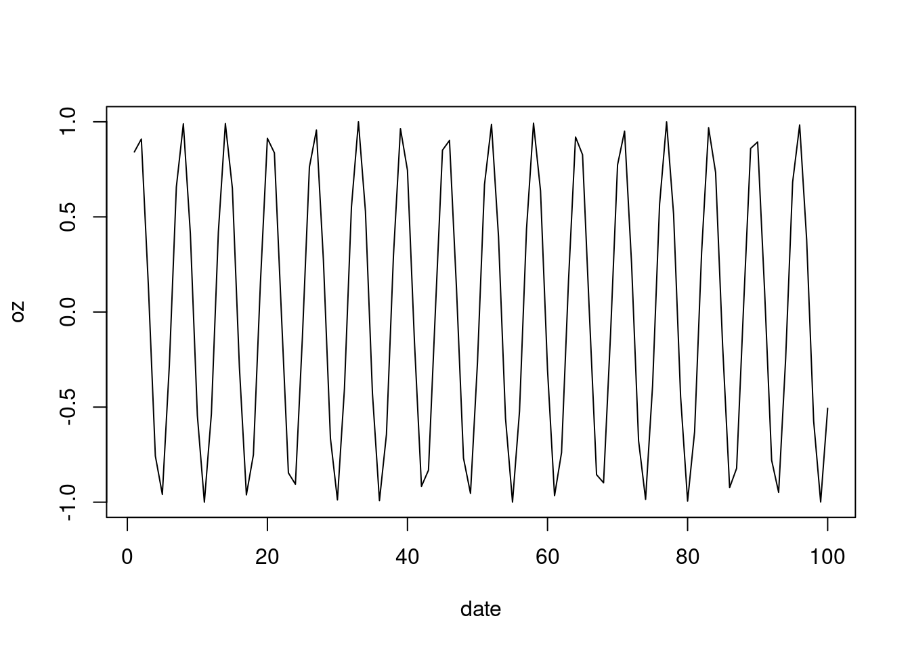
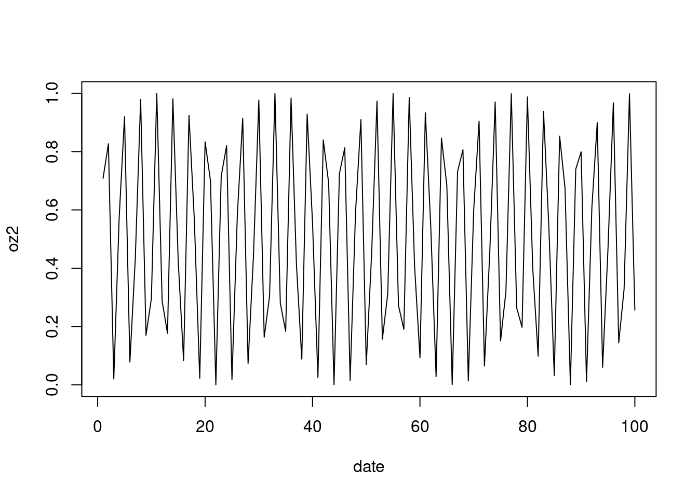
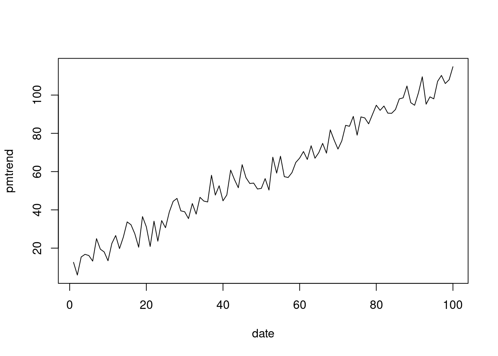
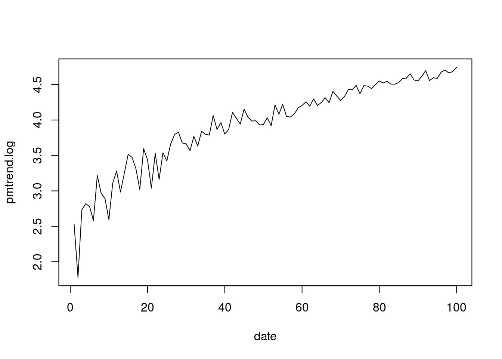
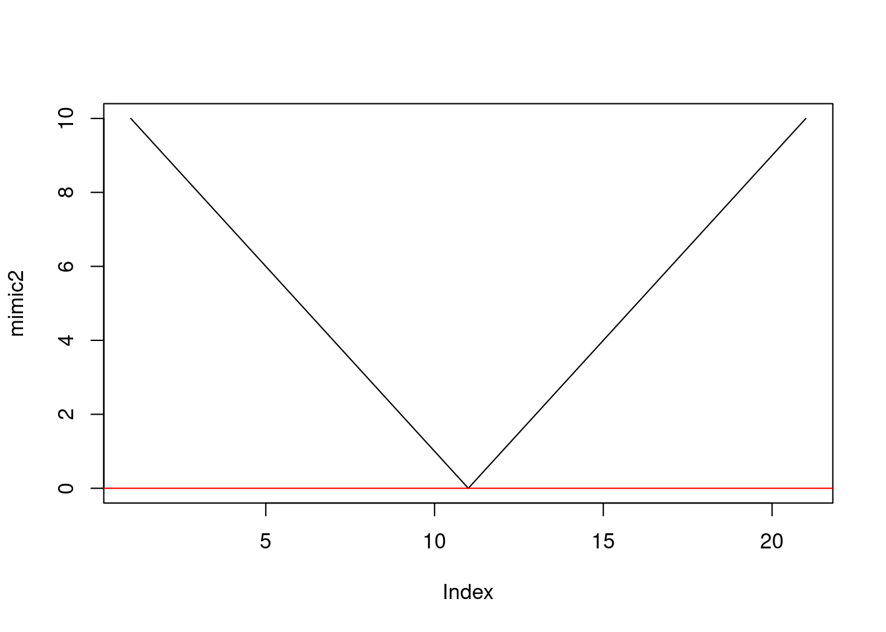
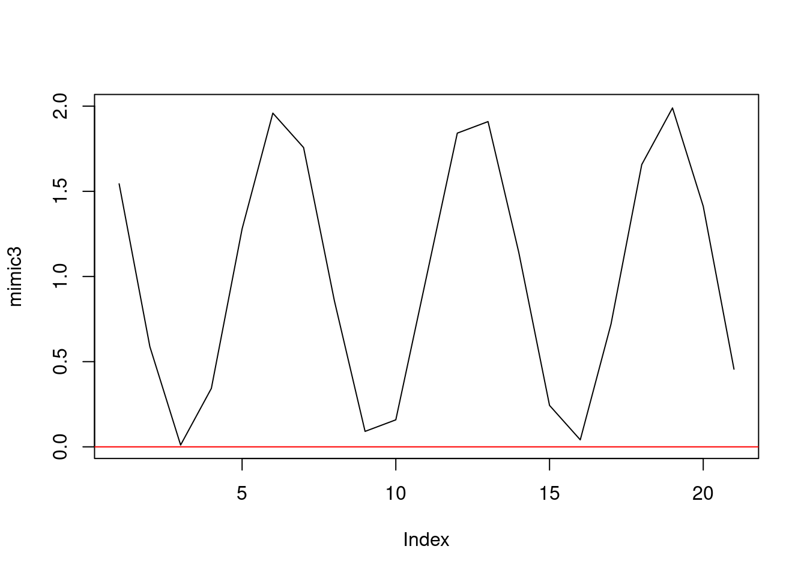

Chapter 4 R program basic
4.1 기초 연산
단순 계산기로 사용할 수 있다. 예를 들어 1+2 의 값이라던가, log2(10) 등을 계산할 수 있다. Rsutdio 의 스크립트 창이나 콘솔 창에 아래의 항목을 작성해 볼 수 있다.
3+4;4-3;4/3;3*4
log2(10)
abs(-4)
sqrt(4)기초 함수는 아래와 같다.
| Operator | Description |
|---|---|
| + | addition |
| - | subtraction |
| * | multiplication |
| / | division |
| ^ or ** | exponentiation |
| x %% y | modulus (x mod y) 5%%2 is 1 |
| x %/% y | integer division 5%/%2 is 2 |
| Operator | Description |
|---|---|
| < | less than |
| <= | less than or equal to |
| > | greater than |
| >= | greater than or equal to |
| == | exactly equal to |
| != | not equal to |
| !x | Not x |
| x | y |
| x & y | x AND y |
| isTRUE(x) | test if X is TRUE |
| Operator | Description |
|---|---|
| Logarithms and exponentials | log2(x), log10(x), exp(x) |
| Trigonometric functions | cos(x), sin(x), tan(x), acos(x), asin(x), atan(x) |
| Others | abs(x): absolute value; sqrt(x): square root. |
기초 함수 중에 몇몇은 그림을 그려보아야 이해가 쉽다.
pm10 = rnorm(n=100, mean = 10, sd = 5) # 평균이 10이고 표준편차가 5인 100개의 랜덤 변수를 pm10 이라고 가정하자
date= rep(1:100) # 1일부터 100까지의 시간이 있다고 해보자
plot(x=date, y=pm10, type = "l") # "l" line 형식으로 그려보았다. 
oz = sin(date) # 오존은 시간에 따라 햇빛이 있을 때 높게 올라간다. sine 함수를 따른다고 가정해 보자
plot(x=date, y = oz, type = "l") # 
oz2 = oz**2 # -값을 갖는 것은 좀 이상하다. 제곱을 통해 변경해 보자
plot(x=date, y = oz2, type = "l") # 
ozabs = abs(oz) # 접곱보다 절대 값이 어떨까?
plot(x=date, y = ozabs, type = "l") # 
pmtrend = pm10 + date # 시간에 따라 pm10 농도가 올라간다고 가정해 보자
plot(x=date, y = pmtrend, type="l")
pmtrend.log = log(pmtrend) # 로그 값을 넣어보자. 특별한 의미는 없이 함수에 대한 실습이다.
plot(x=date, y = pmtrend.log, type="l") #
과제
아래 mimic이라는 -10부터 10까지 점차 증가하는 숫자가 있다. 아래 그림처러 그려진다. abline(h=0)은 horizontal line을 추가해서 0 아래 와 위를 구분해 본것이다.
mimic = -10:10
plot(mimic);abline(h=0) #
아래에 함수(function)에 적당한 함수를 넣어서 아래의 그림 처럼 나타내 보자!
mimic2 = "function"(mimic)
plot(mimic2); abline(h=0, col='red') 
두번 째
여기에 sin 함수를 넣고 최소 값이 0이 되도록 + 1을 해서 그림을 그려보자

4.2 조건부 연산
if-else 라는 조건에 따라 연산을 수행시킨다. 예를 들어 1, 2, 3, 4, 5, 6, 7, 8, 9, 10 의 백터에서 5보다 작으면 A 크면 B를 적용시켜주다.
nums<- 1
if (nums <5) {
chars = 'A'
} else{
chars = 'B'
}
chars## [1] "A"nums <- 6
if (nums <5) {
chars = 'A'
} else{
chars = 'B'
}
chars## [1] "B"몇가지 예제를 더 살펴보자.
a<-round(rnorm(10)*10)
a## [1] 3 -14 12 -9 0 -7 16 18 -6 -6tab <- ifelse(a>0, '양수', '음수')
tab## [1] "양수" "음수" "양수" "음수" "음수" "음수" "양수" "양수" "음수" "음수"data.frame(a, tab)## a tab
## 1 3 양수
## 2 -14 음수
## 3 12 양수
## 4 -9 음수
## 5 0 음수
## 6 -7 음수
## 7 16 양수
## 8 18 양수
## 9 -6 음수
## 10 -6 음수데이터 클리닝에서 자주 사용하는 두개의 조건문 any()와 all()이 있다. any()는 하나라도 TRUE값이 있으면 TRUE를 변환해주고, all()은 모두 TRUE여야 TRUE를 돌려준다.
new.var <- c(1, 2, NA)
is.na(new.var)## [1] FALSE FALSE TRUEany(is.na(new.var))## [1] TRUEall(is.na(new.var))## [1] FALSEindex 를 이용하면 조건 문에서 IF (또는 Where)의 개념을 사용할 수 있다. iris 데이터에서 Sepal.Length 가 가장 큰 값은 찾고, Sepal.Length 최고 값을 갖은 Species의 종류를 찾고자한다. 어떻게 하면될까?
head(iris)## Sepal.Length Sepal.Width Petal.Length Petal.Width Species
## 1 5.1 3.5 1.4 0.2 setosa
## 2 4.9 3.0 1.4 0.2 setosa
## 3 4.7 3.2 1.3 0.2 setosa
## 4 4.6 3.1 1.5 0.2 setosa
## 5 5.0 3.6 1.4 0.2 setosa
## 6 5.4 3.9 1.7 0.4 setosatable(iris$Species)##
## setosa versicolor virginica
## 50 50 50max(iris$Sepal.Length)## [1] 7.9max.length <- which.max(iris$Sepal.Length)
iris$Species[max.length]## [1] virginica
## Levels: setosa versicolor virginica과제
index 를 이용하면 조건 문에서 IF (또는 Where)의 개념을 사용할 수 있다.
iris 데이터에서 Sepal.Length 가 가장 작은 찾고, Sepal.Length 최소 값을 갖은 Species의 종류를 찾고자한다. 최소 값과 종류를 쓰시오
4.3 함수 만들기
저자가 R을 이용하는 이유중 하나가 함수를 손쉽게 만들고 그 결과를 활용하기가 쉽다는 것이다. 자동문, 반복문, 데이터 클리능, 데이터 시각화 등에서 자주 사용하는 기본 원리이다.
숫자 2개를 넣으면 덧 샘을 해주는 함수를 만들어 보자
addtive.function = function(x, y ){
x + y
}addtive.function(100, 2)## [1] 102퀴즈
숫자 2개를 넣으면 두 수의 차이를 보여주는 함수를 만들어 보자 abs 사용. #-#에 계산식을 넣어 함수를 완성해 보세요.
abs.function= function(x, y ){
#--#
}평균을 구해주는 함수 avg를 만들어 보자. length는 길이를 말해주니, 몇개의 변수값이 있는 지 알 수 있다.
my_vector<- 1:50
avg <- function(x){
sum(x)/length(x)
}
avg(my_vector)## [1] 25.5좀더 확장해서 변수 갯수, 평균, 최고, 최저 값을 나타내는 함수를 만들어 보자.
tabs <- function(x){
data.frame( '평균' = mean(x),
'변수갯수' = length(x),
'최고값' = max(x),
'최저값' = min(x)
)
}
tabs(my_vector)## 평균 변수갯수 최고값 최저값
## 1 25.5 50 50 1그럼 이를 이용해서, 다음을 해석해 보자
avg <- function(x, arithmetic = TRUE){
n <- length(x)
ifelse(arithmetic, sum(x)/n, prod(x)^(1/n))
}4.4 반복문, vectorization, functionals
4.4.1 for loop
1a, 2a, 3a, 4a, 5a, 6a, 7a, 8a, 9a, 10a 을 만들어보자, 어떻게 하면될까?
c('1a', '2a', '10a') # 이렇게 해보는 것도 좋지만## [1] "1a" "2a" "10a"반목문을 사용하면, 아래와 같다.
for (i in 1:10){
print(paste0(i, 'a'))
}## [1] "1a"
## [1] "2a"
## [1] "3a"
## [1] "4a"
## [1] "5a"
## [1] "6a"
## [1] "7a"
## [1] "8a"
## [1] "9a"
## [1] "10a"물론 대부분 이렇게 사용하지만, 반복문을 사용하여 확장할 수 있다.
paste0(1:10, "a")## [1] "1a" "2a" "3a" "4a" "5a" "6a" "7a" "8a" "9a" "10a"1:n까지의 숫자 합을 만들어보자, 그리고 이를 1부터 100일때 까지 만들고 그림을 그려보자
compute <- function(n){ sum(1:n)}
compute(10)## [1] 55test <-c()
for (n in 1:100){
test[n] <- compute(n)
}
plot(1:100, test)
4.4.2 vectorization 과 apply 구문
사실 ifelse 를 잘 사용하지 않는다. 이는 속도의 문제와도 관련된다. 실제 ifesel 로 10분이 걸리는 연산이 1분으로 줄수도 있다. 이때 사용하게 되는 것이 백터화와 apply 구문이다. 이미 past0(1:10,“a”) 같은 구문이 편할 수 있다는 것을 느꼈을 것이다. 이번에는 구구단 2단과 3단을 서로 곱해보자. 어떻게 하면 좋을까 for와 if를 생각하기 보다 아래를 고려해 보자. 아래가 백터화이다.
n2 <- c(1:9*2)
n3 <- c(1:9*3)
n2*n3## [1] 6 24 54 96 150 216 294 384 4862단에 3단이 아닌 다른 단을 곱하는 함수를 사용해 보자
new.function<-function(n2){
c(1:9*2) * c(1:9*n2)
}
new.function( 4)## [1] 8 32 72 128 200 288 392 512 648그럼 3단 대신에 1, 2, 3, 4, 5, 6, 7, 8, 9 단을 모두 해보자
sapply(1:9, new.function)## [,1] [,2] [,3] [,4] [,5] [,6] [,7] [,8] [,9]
## [1,] 2 4 6 8 10 12 14 16 18
## [2,] 8 16 24 32 40 48 56 64 72
## [3,] 18 36 54 72 90 108 126 144 162
## [4,] 32 64 96 128 160 192 224 256 288
## [5,] 50 100 150 200 250 300 350 400 450
## [6,] 72 144 216 288 360 432 504 576 648
## [7,] 98 196 294 392 490 588 686 784 882
## [8,] 128 256 384 512 640 768 896 1024 1152
## [9,] 162 324 486 648 810 972 1134 1296 1458상기 행렬을 만들기위해 ifelse를 사용하거나 for 문을 사용하면 좀더 머리가 복잡해 질 수 있다. apply 구문은 확실히 머리가 가벼워진다. tidyverse 부분을 할 때 apply, lapply, tapply, mapply, vaply, replicate등을 다루게 될 것이다.
4.4.3 home work and summary function
iris라는 내장 함수를 사용해서 몇가지 실습을 해보자
iris 데이터의 첫번째 10개의 행을 관찰해 보자
head(iris )## Sepal.Length Sepal.Width Petal.Length Petal.Width Species
## 1 5.1 3.5 1.4 0.2 setosa
## 2 4.9 3.0 1.4 0.2 setosa
## 3 4.7 3.2 1.3 0.2 setosa
## 4 4.6 3.1 1.5 0.2 setosa
## 5 5.0 3.6 1.4 0.2 setosa
## 6 5.4 3.9 1.7 0.4 setosairis 데이터의 마지막 10개의 행을 관찰해 보자
tail(iris)## Sepal.Length Sepal.Width Petal.Length Petal.Width Species
## 145 6.7 3.3 5.7 2.5 virginica
## 146 6.7 3.0 5.2 2.3 virginica
## 147 6.3 2.5 5.0 1.9 virginica
## 148 6.5 3.0 5.2 2.0 virginica
## 149 6.2 3.4 5.4 2.3 virginica
## 150 5.9 3.0 5.1 1.8 virginica과제 iris 데이터에서 각 변수(sepal.length, sepal.width, petal.length, petal.width) 별 최소, 평균, 중간값, 최대값을 구하시오
각 최소, 평균과 가까운 값(소수점 한자리 까지 같은 것), 중간값, 최대값을 갖는 species 를 구하시오.